Not "can a model tell an epilepsy patient from a healthy one." Plenty of biomarkers already do that reasonably well. This asks a narrower, more clinically useful question: among patients already living with drug-resistant epilepsy and already implanted with a stimulator, does their own neural signal say anything about whether this specific therapy is going to work for them?
Why this problem
Epilepsy affects roughly 50 million people worldwide, and close to 30% don't achieve seizure control from medication alone. For that drug-resistant population, Deep Brain Stimulation (DBS) of the thalamus (usually the anterior nucleus, ANT; sometimes the centromedian nucleus, CM) is an established alternative. It works by delivering controlled electrical pulses to disrupt the networks that generate and spread seizures.
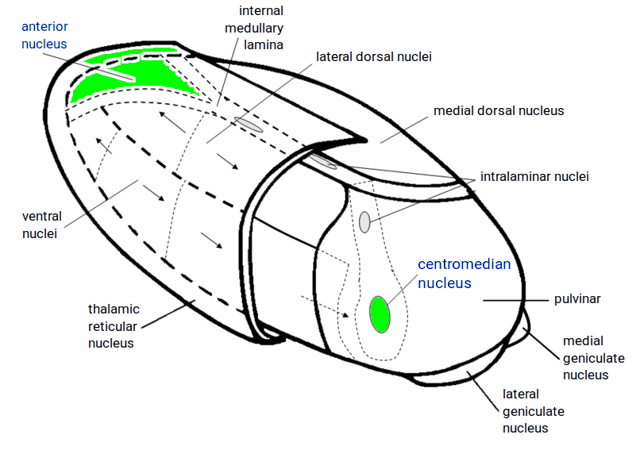
What it doesn't have is an objective feedback signal. Clinicians tune amplitude, pulse width, frequency, and electrode configuration largely by trial and error, guided by patient-reported outcomes over months. There's no equivalent of a blood test that says "this is working" or "try a different setting." Modern hardware (this cohort used the Medtronic Percept device) happens to record local field potentials (LFP) continuously alongside stimulation, which means the raw signal for a biomarker is already being collected. The question is whether anything useful is hiding in it.
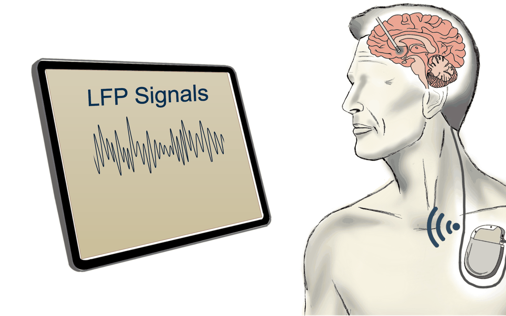
The data
Thirty-three epilepsy patients, all on thalamic DBS via Percept. Responders were defined as a >50% reduction in seizure frequency relative to a pre-implant baseline. Because visits per patient were uneven (most contributed one, some two or three), I used a sliding-window epoching scheme at the visit level to get a workable sample size without pretending unequal patients were equally represented.
| Category | Subjects | Visits | Epochs |
|---|---|---|---|
| Total | 33 | 43 | 375 |
| Anterior nucleus (ANT) target | 27 | 36 | 312 |
| Centromedian (CM) target | 6 | 7 | 63 |
| Responder | 23 | 27 | 239 |
| Non-responder | 13 | 16 | 136 |
Some patients appear in both responder and non-responder rows across different visit timelines: response was tracked per visit, not fixed per patient.
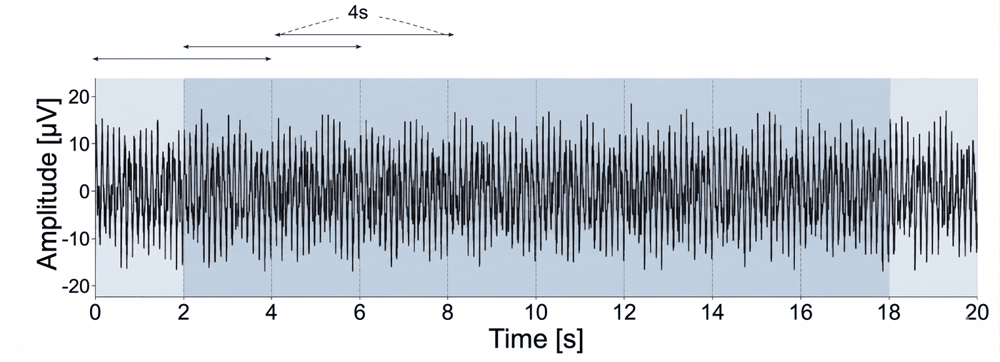
Pipeline
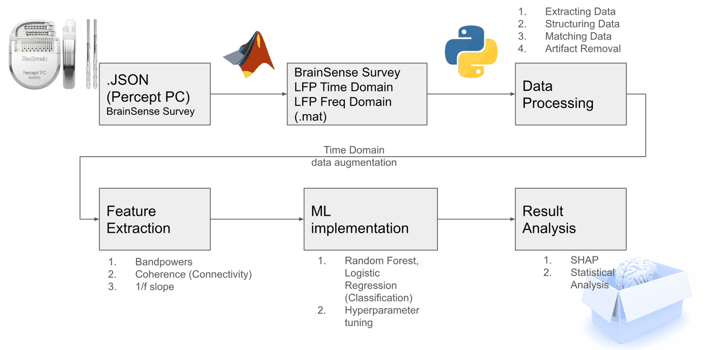
Raw LFP arrives as JSON exports off the device. Manual inspection of generated signals from a customized MATLAB script to automate data extraction from JSON files is done. Afterwards, heartbeat-artifact removal happens, in MATLAB using a customized Percept Toolbox (cardiac contamination is a known problem in chronic brain recordings). From there, I built a Python program to pull the cleaned time-domain signal out of that MATLAB time series into a structured, uniform form for future feature generations for ML models.
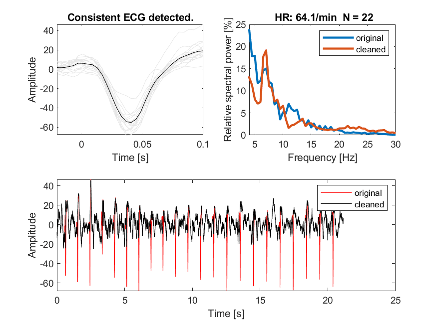
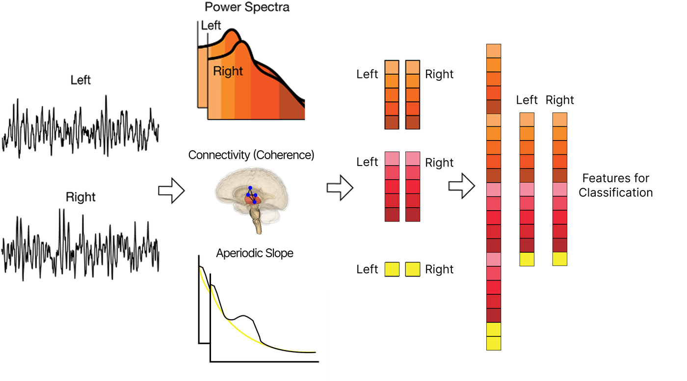
Features: three families, per hemisphere
Everything was computed independently for left and right hemispheres, which turned out to matter more than expected.
- Spectral bandpower: power spectral density summed into five clinically standard bands (delta 1–4 Hz, theta 4–8 Hz, alpha 8–13 Hz, beta 13–30 Hz, gamma 30–50 Hz), giving ten features total.
- Aperiodic slope: the 1/f component of the power spectrum, parameterized with FOOOF over 1–50 Hz. This isn't an oscillation; it's the broadband background shape, thought to reflect the excitation/inhibition balance of the local neural population, which makes it a plausible, biologically grounded candidate rather than an arbitrary statistical feature.
- Connectivity: coherence between each hemisphere's ventral and dorsal contact pair. I used the imaginary part of coherence (ImCoh) rather than raw coherence, since adjacent-channel coherence is inflated by volume conduction and shared reference artifacts almost by construction. ImCoh discards exactly the real-valued component that spurious effect lives in. Inter-hemispheric connectivity wasn't computed, because the two hemispheres' signals weren't recorded synchronously.
Modeling: getting the validation honest
With 375 epochs but only 33 underlying patients, the real danger isn't underfitting; it's a model quietly memorizing individual patients' signal signatures and reporting inflated accuracy that has nothing to do with generalizing to a new patient. So the outer evaluation loop is leave-one-subject-out, not leave-one-epoch-out. Every epoch from a held-out patient is invisible during that patient's test fold.
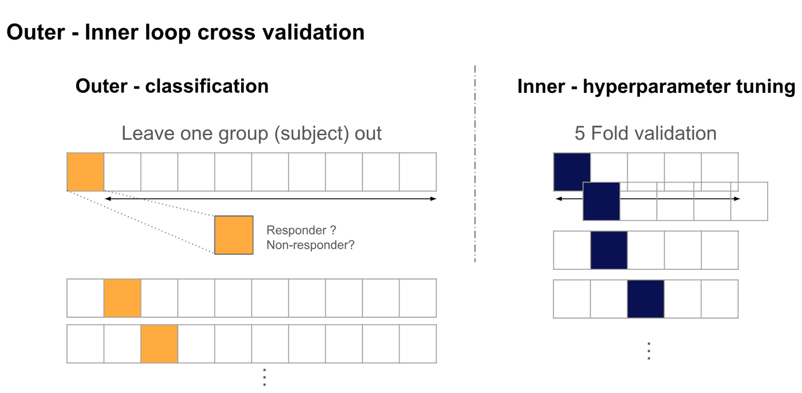
- Two classifiers: Random Forest (captures non-linear feature interactions) and L1-regularized Logistic Regression (able to capture linearities more).
- Hyperparameter tuning happens strictly inside the inner fold (Stratified Group K-Fold: 5-fold for RF, 3-fold for LR), so no patient ever leaks across the inner train/validation split either.
- Class imbalance (239 responder vs. 136 non-responder epochs) handled via balanced-subsample weighting rather than resampling.
- Because epochs from the same patient aren't independent samples, treating them as if they were would understate the real uncertainty. So confidence bands come from 50 rounds of subject-level bootstrap resampling, not epoch-level.
- SHAP for interpretability on the tree-based model, plus an N-feature sweep (subsets of size 1–20, ranked by SHAP importance) to find where performance actually saturates.
What the model found
With both hemispheres combined, Random Forest reached an AUC of 0.65 ± 0.07, versus 0.56 ± 0.08 for Logistic Regression. RF's edge here comes from picking up non-linear interactions between features that a linear model can't. Neither number is spectacular in isolation, which is exactly what you'd expect from a moderate, heterogeneous cohort: the interesting result is where performance concentrates once you stop pooling everything together.
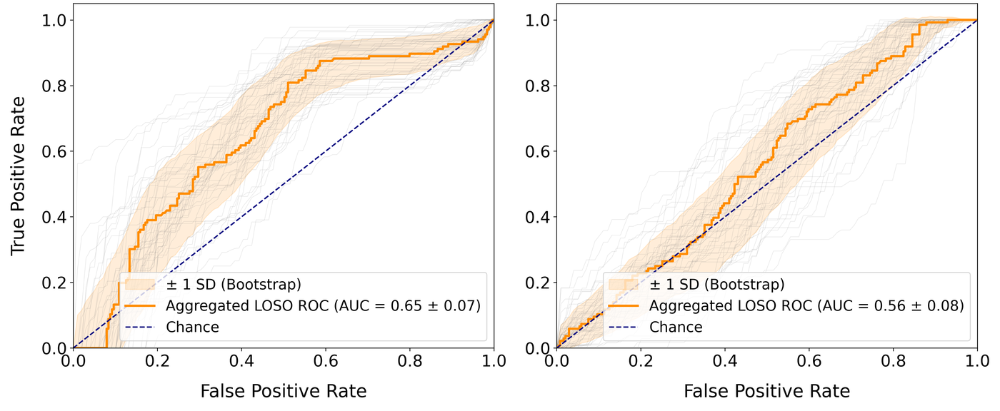
| Configuration | AUC |
|---|---|
| Random Forest, both hemispheres | 0.65 ± 0.07 |
| Logistic Regression, both hemispheres | 0.56 ± 0.08 |
| Logistic Regression, right hemisphere only | 0.67 ± 0.07 |
| Logistic Regression, left hemisphere only | 0.57 ± 0.09 |
| Random Forest, right hemisphere only | 0.60 ± 0.08 |
The feature-count sweep peaks in a narrow band (six to eight features) before performance flattens or degrades. Past that point, additional features add noise rather than signal, which argues for a compact, clinically legible biomarker panel rather than throwing the whole feature set at the problem.
SHAP converged on the same handful of features from a different direction. Right-hemisphere aperiodic slope, right-hemisphere delta and theta bandpower, and left-hemisphere beta bandpower carried the most weight. A Mann-Whitney U test on the visit-level data both confirmed all four differ significantly between responders and non-responders (p < 0.05). The SHAP ranking and classical hypothesis testing agree, which is reassuring given how easy it is for an attribution method to find "importance" in noise.
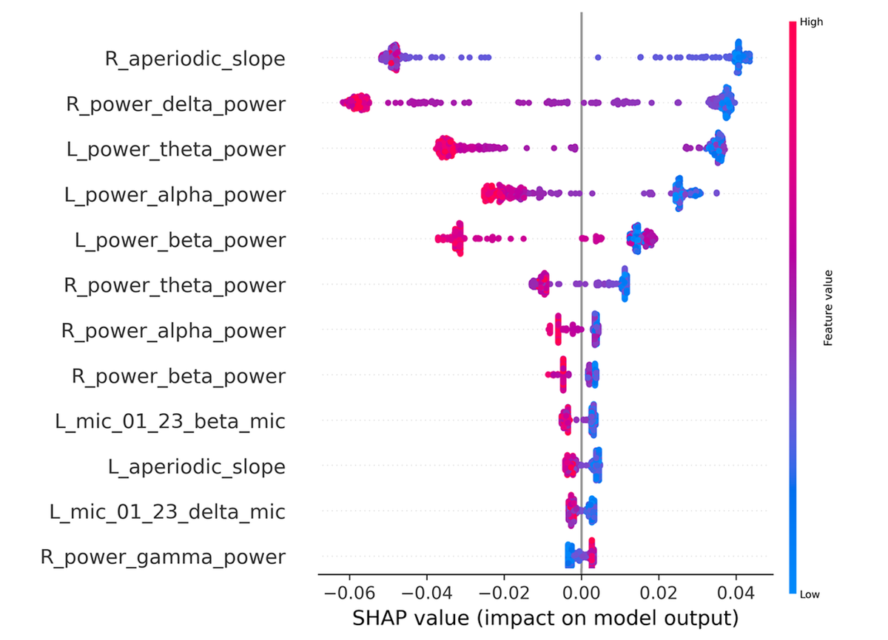
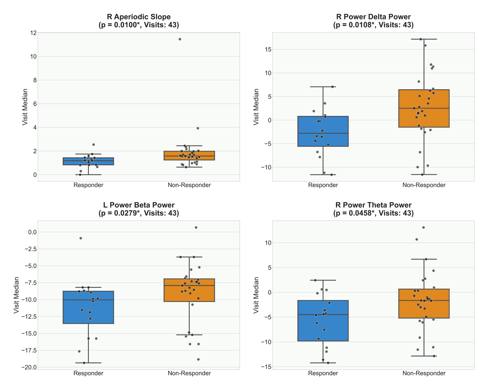
The finding I wasn't looking for: lateralization
The table above has an odd shape. Right-hemisphere features alone, fed to Logistic Regression, beat every other configuration, including the combined-hemisphere Random Forest. But right-hemisphere features fed to Random Forest perform worse than right-hemisphere LR. That combination only makes sense if the right-hemisphere signal is cleanly, almost linearly separable between responders and non-responders: exactly the regime where a linear model has no disadvantage and RF's extra flexibility just adds variance instead of value. The left hemisphere and the combined feature set, by contrast, seem to need RF's non-linear capacity just to keep pace.
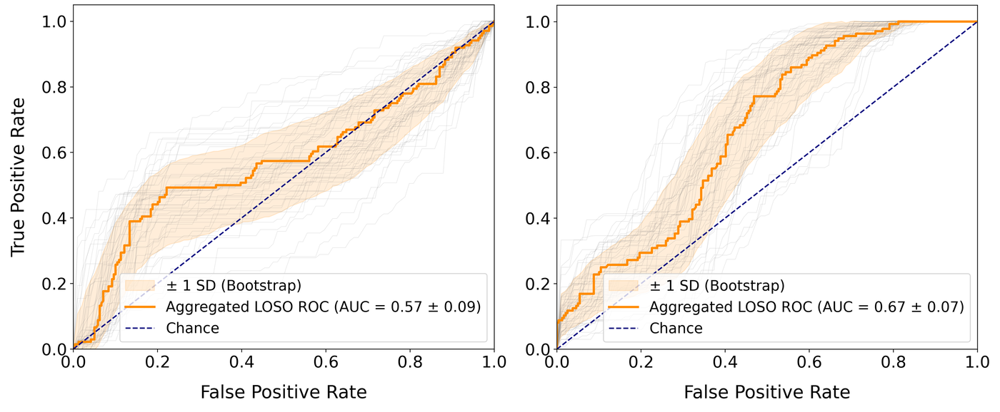
Classical models of generalized epilepsy assume roughly bilateral involvement, so a hemisphere-specific signal wasn't the hypothesis going in. It does track with more recent work suggesting generalized epilepsy is shaped by distinct, lateralized cortical networks rather than a uniform bilateral process, and with Pizarro et al.'s finding that asymmetry in generalized discharges behaves like a stable, patient-specific trait rather than noise. However, this is suggestive, not settled. Distinguishing "this reflects fixed, patient-specific network topology" from "this is a bias in how this particular cohort's electrodes happened to be placed" needs a larger, longitudinal cohort than 33 patients can give.
Why the aperiodic slope, specifically
Of every feature engineered, the aperiodic (1/f) slope carried the most SHAP weight, and higher right-hemisphere slope values pushed predictions toward non-responder. The aperiodic exponent is thought to track the excitation/inhibition ratio of the underlying neural population: not an oscillation you can point to on a spectrogram, but the broadband shape underneath it. That gives the top feature a plausible mechanistic story, not just a statistical one. If responders and non-responders differ systematically in thalamic network excitability, that's the kind of difference DBS parameter tuning would actually want to know about, and it lines up with other papers linking aperiodic-activity shifts to seizure reduction under neuromodulation.
Honest limitations
Thirty-three patients with implanted-device LFP is, as far as I can tell, the largest cohort of its kind reported for this question, and it's still a modest N for a field that considers AUC > 0.8 the bar for a "good" diagnostic biomarker. That benchmark, though, is mostly set by an easier task: separating diagnosed patients from healthy controls. Predictive/response biomarkers (will this treatment work for this already-diagnosed patient?) are a much rarer, harder category in the literature, and 0.65–0.67 sits in a useful and exploratory range for a first pass at that question, not a failure to hit an unrelated bar.
The uneven visits-per-patient split adds real heterogeneity, and sliding-window augmentation buys epoch count without substituting for more independent patients. The lateralization result, as above, is an empirical pattern in this dataset that needs replication before I'd treat it as a stable biological claim rather than a promising lead.
Where this goes
Two directions to follow: scale data collection toward a cohort large enough to properly test the lateralization hypothesis, and move from engineered spectral/aperiodic features toward interpretable deep learning that can capture spatiotemporal LFP dynamics those hand-built features necessarily flatten. The long-term target is integrating a validated biomarker into a real-time, closed-loop DBS system, one that adjusts stimulation based on the patient's own signal instead of a clinician's best guess between visits.
Submitted to IEEE Machine Learning for Signal Processing (MLSP) Conference. Aperiodic-slope parameterization via FOOOF (Donoghue et al., 2020); interpretability via SHAP (Lundberg et al., 2020); lateralization context from Pizarro, Walker & Sheybani (2025) and related work on aperiodic activity as a seizure/neuromodulation biomarker (Gregg et al., 2024; Satzer et al., 2025).